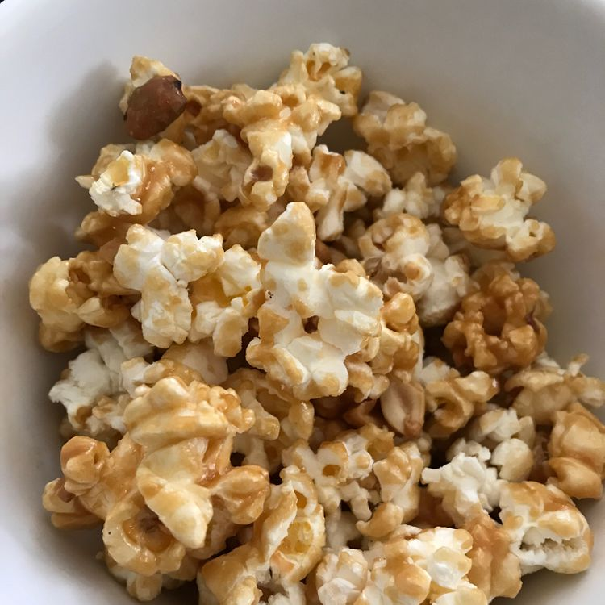

Microwave Caramel Popcorn
Microwave Caramel Popcorn

Microwave caramel popcorn is delicious and so easy to make at home with this recipe.
Store in an airtight container.
Ingredients:
- 4 quarts popped popcorn
- 1 cup brown sugar
- 1/2 cup butter or margarine
- 1/4 cup light corn syrup
- 1 teaspoon vanilla extract
- 1/2 teaspoon salt
- 1/2 teaspoon baking soda
Direction:
- Place popped popcorn into a large brown paper bag.
- Combine brown sugar, margarine, corn syrup, vanilla, and salt in a microwave-safe bowl or dish. Microwave for 3 minutes, then stir until well blended. Microwave for another 1 1/2 minutes.
- Remove brown sugar mixture from the microwave and stir in baking soda. Pour over popcorn in the bag; fold the top edge of the bag once or twice to close, then shake to coat popcorn.
- Place the bag into the microwave and cook for 70 seconds. Shake the bag, flip over, and cook for 70 seconds more.
- Pour popcorn out onto waxed paper and let cool until coating is set, 3 to 5 minutes.